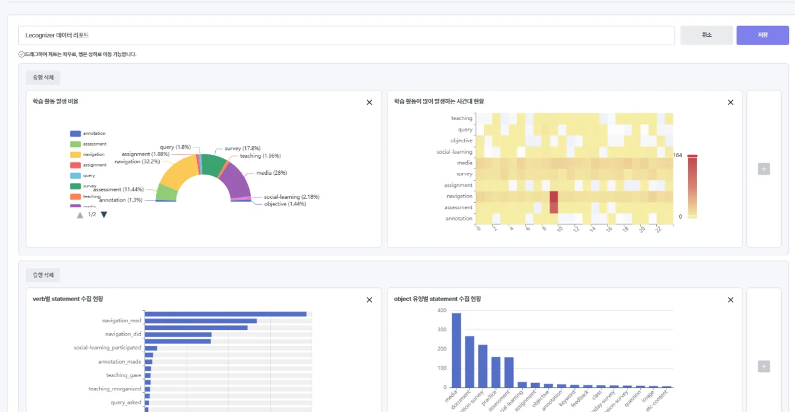
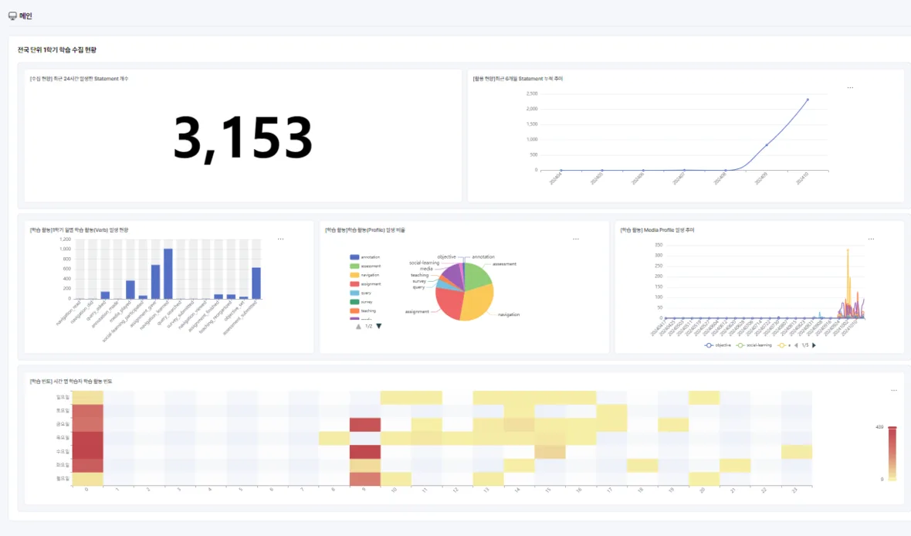
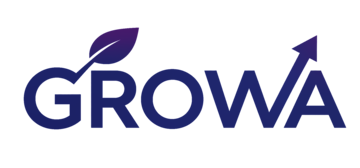
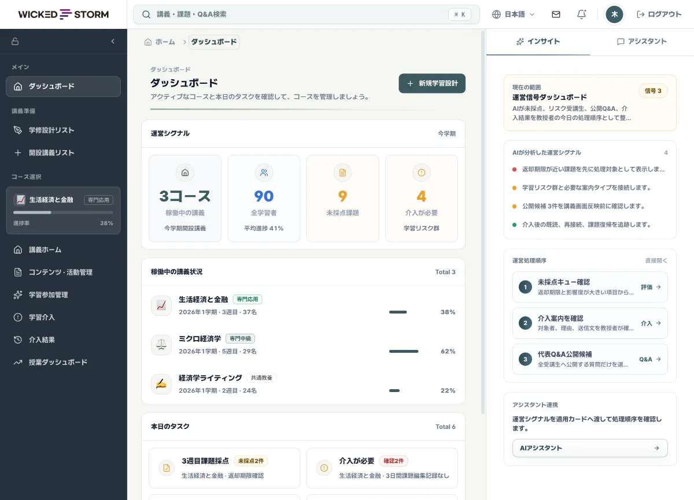
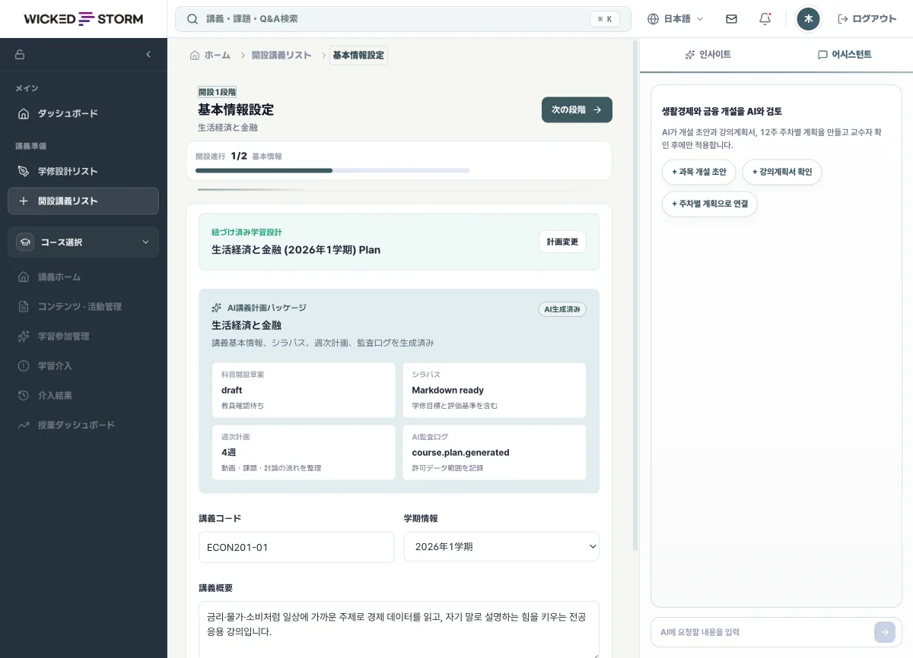
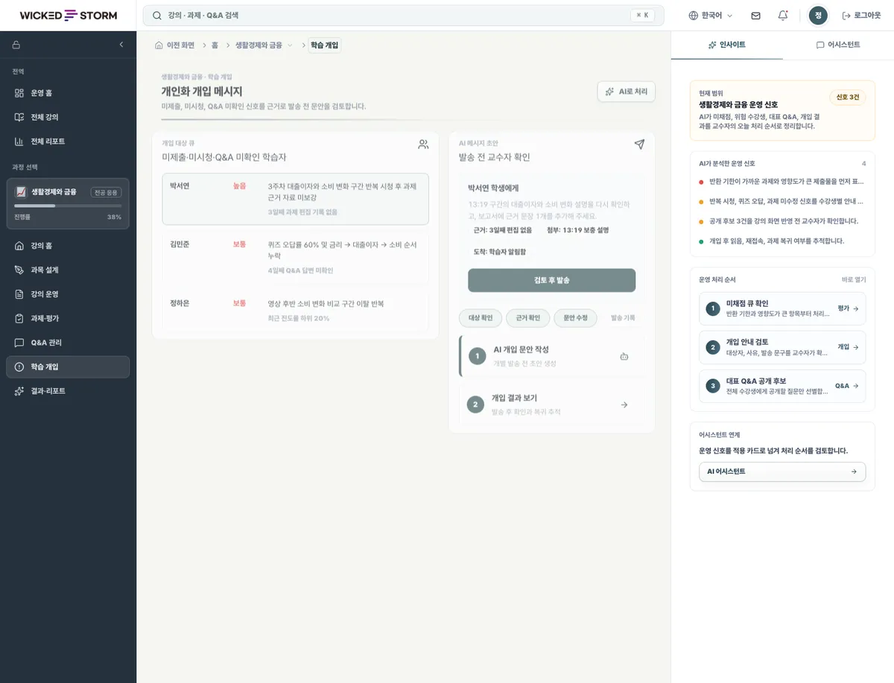

Living Data · AI Insight
Living Data · AI Insight2024-2026 | KERIS
AI 디지털교과서 도입 연계
학습데이터 활용체계
xAPI 기반으로 학습활동을 수집하고 검증하는 LRS를 구축해 교육과정 표준체계, 학습맵, 국가 수준 학습분석 지표를 연계했습니다.
역할LRS 구축, 학습데이터 수집과 연계, 교육과정 표준체계 및 학습분석 설계
학습 이벤트를 xAPI로 연결
LMS·콘텐츠·평가 도구에서 발생하는 학습 이벤트를 xAPI Statement로 실시간 수집합니다.
분석 가능한 표준 구조로
Actor · Verb · Object 구조로 정규화해, 시스템이 달라도 같은 언어로 기록합니다.
진단·추천 모델 적용
누적된 학습 기록으로 학습 수준을 진단하고 취약 영역을 예측합니다.
리포트와 운영 판단으로
역할별 대시보드와 리포트로 다음 학습 액션을 제안합니다.
 Product
Product
Learning Record Store
xAPI 기반으로 학습경험 데이터를 수집·저장·시각화하는 학습기록저장소. 흩어진 학습 활동을 하나의 표준 데이터로 모읍니다.

Analytics & AI Model
수집된 학습활동 데이터를 AI로 분석해 진단·추천·리포트로 확장하는 학습분석 플랫폼. 데이터를 실행 가능한 인사이트로 바꿉니다.

 References
References
전국 단위의 학습 데이터 수집·분석 경험으로 공공기관과 교육기관의 데이터 기반 혁신을 함께 만들어 왔습니다.
2024-2026 | KERIS
xAPI 기반으로 학습활동을 수집하고 검증하는 LRS를 구축해 교육과정 표준체계, 학습맵, 국가 수준 학습분석 지표를 연계했습니다.
역할LRS 구축, 학습데이터 수집과 연계, 교육과정 표준체계 및 학습분석 설계
2023-2025 | KERIS
LRS와 xAPI로 학습이력을 수집하고, 학생 수준 진단과 콘텐츠 추천을 위한 AI 모델을 개발하고 적용했습니다.
역할학습이력 수집, AI 진단과 예측, 추천 모델
2021-2022 | 인사혁신처
LRS와 소셜러닝 xAPI 프로파일, 수집 API를 구축하고 실시간 화상수업 활동을 xAPI로 수집해 시각화했습니다.
역할LRS 구축, 소셜러닝과 실시간 화상 xAPI 수집
2022-2023 | 서울특별시
학습분석 지표를 수립하고 화상 멘토링 활동을 xAPI 학습데이터로 정의해 LRS와 빅데이터 저장소에 연계했습니다.
역할학습분석 지표, 화상 멘토링 데이터 정의, LRS 연계
 Standards Leadership
Standards Leadership
위키드스톰은 국제 교육기술 표준 컨소시엄 1EdTech의 한국 조직 1EdTech Korea 설립에 참여해 교육 데이터 표준의 국내 확산 활동에 함께하고 있습니다. xAPI와 CASE는 실제 제품과 레퍼런스 설계에 적용해 왔고, Open Badges 3.0과 CLR 2.0 등 성취증거 표준은 적용을 준비하고 있습니다.
표준 연계 검토
 글로벌 사업화 준비
글로벌 사업화 준비

GROWA는 위키드스톰이 개발 중인 AI 기반 LXP 프로토타입입니다. 강의 설계, 평가, 학습자 개입, 리포트를 한 흐름으로 연결하고, 일본 대학 환경의 요구를 검토하며 차세대 LMS 사업을 위한 기준 설계를 다듬고 있습니다.
※ 제품 화면 예시 (개발 중 프로토타입)



 Feed · Update
Feed · Update
위키드스톰이 xAPI 학습행동 데이터 기반 이상 학습 탐지 시스템에 관한 특허를 등록했습니다(등록번호 10-2883249). 학습 과정에서 수집되는 xAPI Statement를 분석해, 통상적인 학습 패턴에서 벗어난 이상 징후를 식별하는 방법에 관한 기술입니다.
이 기술은 수집된 학습 데이터의 신뢰성과 분석 품질을 뒷받침하며, Lecognizer의 분석 파이프라인에서 이상 학습 탐지 축을 이룹니다. 앞서 등록한 학습자 프로파일링 특허(10-2767110)와 함께 위키드스톰의 학습 분석 기술 기반을 넓혀 갑니다.
위키드스톰이 학습자 프로파일링 방법에 관한 특허를 등록했습니다(등록번호 10-2767110). 학습 활동에서 발생하는 데이터를 기반으로 학습자의 특성과 상태를 정밀하게 분류·예측하는 방법에 관한 기술입니다.
xAPI 표준으로 수집한 학습경험 데이터를 분석해 맞춤형 진단과 문항 추천의 근거를 마련하며, Lecognizer LRS·LAP의 분석 파이프라인에 적용해 나가고 있습니다.
학습경험 데이터 수집·표준화 솔루션 Lecognizer V1.0이 공공 조달 시장 진입을 위한 절차를 진행하고 있습니다. 공공·교육기관이 xAPI 국제 표준 기반의 학습기록저장소를 보다 간편하게 도입할 수 있도록 준비하고 있습니다.
도입 범위와 연계 방식, 구매 절차에 관한 문의는 02-2205-1470 또는 manager@wickedstorm.kr로 연락 주시기 바랍니다.
 Company
Company
위키드스톰은 AI 기술로 에듀테크의 미래를 만듭니다. 학습 데이터를 수집·표준화·분석해, 교육 현장의 의사결정이 데이터 위에서 이루어지도록 돕습니다.
AI 커스텀 개발 · AI 분석 솔루션 · 데이터 컨설팅
 History
History
 Contact
Contact
제품 구성, 표준 연계, 공공·글로벌 적용 범위까지 함께 논의합니다. 접수 내용을 확인한 뒤 입력한 이메일로 회신합니다.